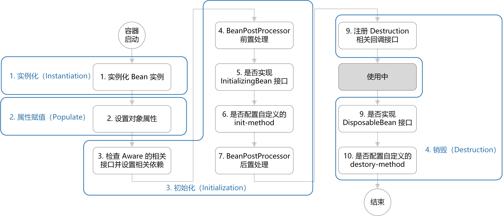

控制反转(Inversion of Control,IoC)
IoC 容器简介
IoC 模式下，控制权发生了反转，即从应用程序转移到了 IoC 容器，所有组件不再由应用程序自己创建和配置，而是由 IoC 容器负责。
IoC 的实现方式：依赖查找(Dependency Lookup)：容器中的受控对象通过容器的 API 来查找自己所依赖的资源和协作对象。依赖注入 (Dependency Injection)：容器全权负责组件的装配，它会把符合依赖关系的对象通过属性(JavaBean 中的 setter) 或者是构造子传递给需要的对象。
IoC 容器是一个管理 Bean 的容器，Spring IoC 容器主要基于以下两个接口：
BeanFactoryApplicationContext
装配 Bean
@Configuration@Configuration 注解修饰的类，会被 spring 通过 cglib 做增强处理，通过 cglib 会生成一个代理对象，代理会拦截所有被 @Bean 注解修饰的方法，可以确保一些 bean 是单例的
@Bean@Bean 标注在返回实例的方法上，将方法返回的对象装配到 IoC 容器中。如果未指定 name 属性，则将方法名作为 Bean 的名称。
@ComponentScan@ComponentScan 从定义的扫描路径中找出标识了需要装配的类自动装配到 Bean 容器中。默认扫描当前包和其子包下的路径。
可以通过 value、basePackages、basePackageClasses 这几个参数来配置包的扫描范围。指定包名的方式配置扫描范围存在隐患，包名被重命名之后，会导致扫描实现，所以可以在需要扫描的包中可以创建一个标记的接口或者类，作为 basePackageClasses 的值，通过这个来控制包的扫描范围。@Component@Component，标注在类上，标明这个类需要被扫描装配到 Bean 容器中。
@Component 是个通用注解，还可以针对不同的使用场景使用 @Repository、 @Service、@Controller 注解。@Import可以用来批量导入任何普通的组件、配置类，将这些类中定义的所有 bean 注册到容器中。可以单独导入第三方 jar 包或者其他模块中的中的一些类。
@Scope用来定义 bean 的作用域。
@DependsOn用来指定当前 bean 依赖的 bean，可以确保在创建当前 bean 之前，先将依赖的 bean 创建好。
@ImportResource标注在配置类上，用来引入 bean 定义的配置文件
@Lazy让 bean 延迟初始化。
条件装配 Bean
@Conditional配置的类需要实现 Condition 接口，实现 matches 方法。满足自定义情况下返回 true 则会装配 Bean。
@Profile当属性文件中的
spring.profiles.active或spring.profiles.default有配置时，@Profile 标注的且属性值相同的 Bean 才会装配。
依赖注入
@Autowired首先根据类型找到对应的 Bean，如果对应类型的 Bean 不是唯一的，那么它会根据其属性名称和 Bean 的名称进行匹配。
@Autowired 是一个默认必须找到对应 Bean 的注解，如果不能确定其标注属性一定会存在并且允许这个被标注的属性为 null，那么可以配置属性 required 为 false。@Resource首先通过名称找，然后通过类型找
@Primary@Primary 注解在 Bean 上，是一个修改优先权的注解。如果发现多个同样类型的 Bean 时，优先使用 @Primary 注解的 Bean。
@Quelifier与 @Autowired 组合使用，通过类型和名称一起找到 Bean。
Bean 的生命周期
Spring Bean 的初始化流程：
资源定位
- xml 中定义的 Bean 标签
- @ComponentScan 所定义的扫描包中的 Bean
- @Configuration 类中，注解 @Bean 的方法返回的 Bean
Bean 定义
将 Bean 的定义保存在 BeanDefinition 的实例中
Bean 注册
BeanDefinition 注册到 BeanFactory。
默认情况下，之后 Spring 会继续完成 Bean 的实例化和依赖注入。如果配置了 lazyInit(懒加载)则不会在此后完成实例化和依赖注入。实例化
在第一次从 BeanFactory 当中 getBean()时， 这个 Bean 的实例才会真正生成
依赖注入
搜索 Bean 中的 @Autowired 注解,，生成注入依赖的信息，初始化 Bean。
实例化和初始化的区别：实例化是在 JVM 的堆中创建了这个对象实例，此时它只是一个空的对象，所有的属性为 Null。而初始化的过程就是讲对象依赖的一些属性进行赋值之后，调用某些方法来开启一些默认加载。
Bean 生命周期：参考

Spring 中的循环依赖：
Spring 使用三级缓存来处理循环依赖：- singletonObjects：一级缓存，用来存放已经创建好的单例 Bean - arlySingletonObjects：二级缓存，用来存放已经实例化但还没初始化的 Bean(代理对象) - singletonFactories：三级缓存，用来存放创建 Bean 的 ObjectFactory，可以在需要时生成代理对象或普通对象为什么有第三层：如果要使用二级缓存解决循环依赖，意味着 Bean 在构造完后就创建代理对象。Spring 结合 AOP 跟 Bean 的生命周期，是在 Bean 创建完全之后通过 AnnotationAwareAspectJAutoProxyCreator 这个后置处理器来完成的，让 Bean 在生命周期的最后一步完成代理而不是在实例化后就立马完成代理。
Bean 的作用域
@Scope
作用域类型 作用域描述 singleton 默认值，IoC 容器只存在单例 prototype 每当从 IoC 容器中取出一个 Bean，则创建一个新的 Bean session HTTP 会话 request Web 工程单次请求(request) globalSession 在一个全局的 HTTP Session 中，一个 Bean 定义对应一个实例。 profile
@Value通过 @Value(“${datasource.url}”)注解，使用 ${…}占位符读取配置在属性文件的内容。还可以使用 Spring EL 表达式(#{…})。
@RefreshScope动态刷新 @Value 的值。@Scope 中 proxyMode 为 TARGET_CLASS 的时候，会给当前创建的 bean 通过 cglib 生成一个代理对象，通过这个代理来实现 @Value 动态刷新的效果
@ConfigurationProperties注解中配置的字符串与 POJO 的属性名称组成属性的全限定名去配置文件里查找，这样就能将对应的属性读入到 POJO 当中。
@PropertySource定义属性文件，把它加载到 Spring 的上下文中。
value属性可以配置多个配置文件，使用classpath:前缀，意味着去类文件路径下找到属性文件。
面向切面编程(Aspect Oriented Programming,AOP)
Spring 的 AOP 主要由 jdk 动态代理、cglib 代理实现
- jdk 动态代理：只能为接口创建代理对象，创建出来的代理都是 java.lang.reflect.Proxy 的子类
- cglib 代理：cglib 为类创建代理的过程，实际上是通过继承来实现的。生成对应的子类的二进制并使用 ClassLoader 装载, 生成 Class 对象再缓存
AOP 术语
连接点(join point)
对应的是具体被拦截的对象，因为 Spring 只能支持方法，所以被拦截的对象往往就是指特定的方法。
切点(point cut)
切面不单单应用于单个方法，也可能是多个类的不同方法，这时，可以通过正则式和指示器的规则去定义，从而适配连接点。切点就是提供这样的一个功能概念。
通知(advice)
就是按照约定的流程下的方法，分为前置通知 (before advice)、后置通知(after advice)、环绕通知(around advice)、返回通知(afterReturning advice) 和异常通知(afterThrowing advice)，它会根据约定织入流程中，需要明白它们在流程中的顺序和运行条件。
切面(aspect)
切面由切点和通知组成，Spring AOP 根据切面定义的横切逻辑织入到切面所指定的连接点中。
目标对象(target)
即被代理对象。
引介(introduction)
引介是一种特殊的通知，它为类添加一些属性和方法，增强现有的 Bean 功能。
织入(weaving)
Spring 采用动态代理技术，为原有服务对象生成代理对象，然后将与切点定义匹配的连接点拦截，并按约定将各类通知织入约定流程的过程。
代理(proxy)
为某一个对象创建一个代理对象，程序不直接用原本的对象，而是由创建的代理对象来控制原对象，通过代理类这中间一层，能有效控制对委托类对象的直接访问，也可以很好地隐藏和保护委托类对象，同时也为实施不同控制策略预留了空间
- 动态代理：在程序运行时，运用反射机制动态创建而成
- JDK 动态代理：自带的，要求目标对象实现一个接口
- CGLIB 动态代理：基于继承来实现代理，所以无法对 final 类，private 方法和 static 方法实现代理
- 静态代理：由程序创建或特定工具自动生成源代码，在程序运行前，代理类的.class 文件就已经存在
如果目标对象实现类接口，则默认采用 JDK 动态代理
如果目标对象没有实现接口，则采用 CGLIB 进行动态代理- 动态代理：在程序运行时，运用反射机制动态创建而成
@AspectJ
@EnableAspectJAutoProxy添加在配置类或启动类上，启用 @AspectJ 注解配置方式
@AspectJ注解在 Bean 上声明为切面
@Pointcut定义切点
execution1
它与方法执行连接点匹配。在这里，第一个通配符匹配任何返回值，第二个通配符匹配任何方法名称，(..)模式匹配任意数量的参数(零个或多个)。
within1
这将匹配限制为某些类型的连接点。
1
还可以匹配 com.cxh 包或子包中的任何类型。
this1
2
3
4
5
6
7
8
```
匹配当前 AOP 代理对象类型, 作用于代理对象
- `target`
```java
匹配当前目标对象类型, 作用于目标对象
args用于匹配特定的方法参数
1
该切入点与以 find 开头且仅具有 Long 类型的一个参数的任何方法匹配
1
匹配具有任意数量参数但第一个参数类型为 Long 的方法
@target匹配的目标对象的类有一个指定的注解
@args匹配方法参数所属的类型上有指定的注解
@within匹配必须包含某个注解的类里的所有连接点
@annotation匹配有指定注解的方法
@Before定义前置通知，通知方法会在目标方法调用之前执行
@After定义后置通知，通知方法会在目标方法返回或者抛出异常后调用
@AfterReturning定义返回通知，通知方法会在目标方法返回后调用
@AfterThrowing定义异常通知，通知方法会在目标方法抛出异常后调用
@Around定义环绕通知，该注解能够让你在调用目标方法前后，自定义自己的逻辑
@DeclareParents1
2
private Encoreable encoreable;@DeclareParents 注解由三部分组成：
value属性指定了哪种类型的 Bean 要引入该接口。在本例中，也就是所有实现 Performance 的类型。(标记符后面的加号表示是 Performance 的所有子类型，而不是 Performance 本身。)defaultImpl属性指定了为引入功能提供实现的类。在这里，我们指定的是 DefaultEncoreable 提供实现。- @DeclareParents 注解所标注的静态属性指明了要引入了接口。在这里，我们所引入的是 Encoreable 接口。
任务调度
@EnableAsync
添加在配置类或启动类上，启用异步任务支持@Async
将方法标记为异步，当此方法被调用时，会异步执行，也就是新开一个线程执行，不是在当前线程执行
若需取异步执行结果，方法返回值必须为 Future 类型，使用 spring 提供的静态方法 org.springframework.scheduling.annotation.AsyncResult#forValue 创建返回值
@EnableScheduling
添加在配置类或启动类上，启用定时任务支持@Scheduled
将方法标记为定时方法，需要指定以下任一参数:- fixedDelay: 在上一次定时任务执行完之后，间隔多久继续执行
- fixedRate: 无论上一次定时任务有没有执行完成，两次任务之间的时间间隔
- cron: 使用 cron 表达式来指定任务计划
@EnableRetry
添加在配置类或启动类上，启用重试，需要添加 spring-retry 依赖@Retryable
在需要重试的方法上添加此注解，方法不能有返回值- maxAttempts: 最大重试次数
- value: 抛出指定异常才会重试
- include: 和 value 一样，默认为空，当 exclude 也为空时，所有异常都重试
- exclude: 指定不处理的异常，默认空，当 include 也为空时，所有异常都重试
- recover: 此类中用于恢复的方法的名称
- backoff: 重试等待策略
- value: 重试之间间隔时间
- delay: 重试之间的等待时间
- multiplier: 指定延迟倍数
- `@Recover`
标记方法为一个重试方法的补偿方法，需要和标记 @Retryable 的方法在一个类中
事件和监听器
监听器在不同阶段都会监听相应的事件，当事件触发时，对应事件的监听器就会被通知。
事件类需要继承 ApplicationEvent:1
2
3
4
5public class TestEvent extends ApplicationEvent {
public TestEvent(Object source) {
super(source);
}
}监听器实现 ApplicationListener 接口：
1
2
3
4
5
6
public class TestListener implements ApplicationListener<TestEvent> {
public void onApplicationEvent(TestEvent event) {}
}监听器或者添加 @EventListener 注解
若监听方法有返回值，那将会把这个返回值当作事件源，一直发送下去，直到返回 void 或者 null 停止
可以在标注 @EventListener 的方法上面使用 @Order(顺序值)注解来标注顺序1
2
3
public void onTestEvent(TestEvent event) {}发布事件
1
2
3
4
5
6
ApplicationContext context;
public void test() {
context.publishEvent(new TestEvent("test event"));
}@EventListener 注解可以用在接口或者父类上
@EventListener 存在漏事件的现象，但是 ApplicationListener 能监听到所有的相关事件缓存
@EnableCaching启用缓存功能
@Cacheable方法被调用后将其返回值缓存起来，以保证下次利用同样的参数来执行该方法时可以直接从缓存中获取结果，而不需要再次执行该方法。
- value：指定 Cache 名称。可以将 Cache 想象为一个 HashMap，系统中可以有很多个 Cache，每个 Cache 有一个名字，你需要将方法的返回值放在哪个缓存中，需要通过缓存的名称来指定。
- key：自定义 key。key 属性支持 SpEL 表达式；当我们没有指定该属性时，Spring 将使用默认策略生成 key。
org.springframework.cache.interceptor.SimpleKeyGenerator - condition：控制缓存的使用条件。
- unless：控制是否需要将结果丢到缓存中
@CachePut方法每次都会被调用，然后方法执行完毕之后，会将方法结果丢到缓存中。 属性和
@Cacheable相同@CacheEvict方法被调用的时候，会清除指定的缓存
- condition：注解生效的条件，值为 spel 表达式
- allEntries：是否清理 cacheNames 指定的缓存中的所有缓存信息。可以将一个 cache 想象为一个 HashMap，当 allEntries 为 true 的时候，相当于 HashMap.clear()
- beforeInvocation：是否在方法执行前执行清除操作，否则方法执行成功之后执行
@Caching当在类上或者同一个方法上同时使用 @Cacheable、@CachePut 和 @CacheEvic 这几个注解中的多个的时候，此时可以使用 @Caching 这个注解来实现
@CacheConfig这个注解标注在类上，可以将其他几个缓存注解的公共参数给提取出来放在 @CacheConfig。这些注解中也可以指定属性的值对 @CacheConfig 中的属性值进行覆盖
声明式事务
@EnableTransactionManagement启用 Spring 的注释驱动事务管理功能
@Transaction放在接口上，那么接口的实现类中所有 public 都被 spring 自动加上事务
放在类上，那么当前类以及其下无限级子类中所有 pubilc 方法将被 spring 自动加上事务
注意：@Transaction 只对 public 方法有效
参考 事务配置 @Transactional